Part 1. Mirror and Glass Materials
Show a sequence of six images of scene `CBspheres.dae` rendered with `max_ray_depth` set to 0, 1, 2, 3, 4, 5, and 100. The other settings should be at least 64 samples per pixel and 4 samples per light. Make sure to include all screenshots. Point out the new multibounce effects that appear in each image and explain how these bounce numbers relate to the particular effects that appear. Make sure to include all screenshots.

At ray depth zero, we don't see anything other than the light source, as expected. |
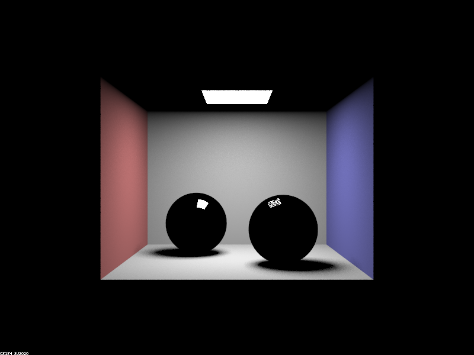
At ray depth one, the walls appear as diffuse materials (as we saw before). However, this time the spheres still remain black except for the direct reflection from the light source. This is because at this ray depth no rays can actually bounce off of the spheres yet, so we only see the effects of direct lighting. In this case, only parts of the spheres that directly reflect light from the light source are lit. |
|
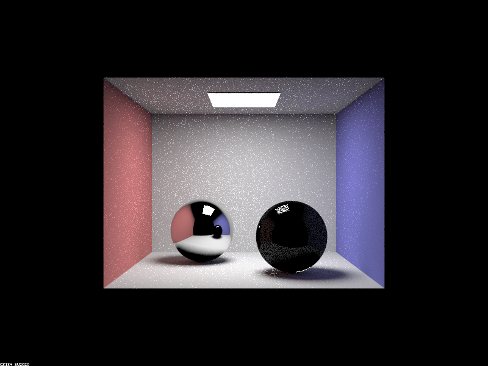
At ray depth two, the reflecting sphere is finnaly not mostly black. This is because it can finnaly reflect rays off of it and get back the direct illumination of the room. This is why the bottom of the reflected sphere is still black while the floor itself is not. The scene we see reflected in the reflecting sphere is essentially always "one ray behind" the actual scene. This is because the ray had to first bounce off the sphere, then back onto the scene. This is why the glass sphere appears completely black in the reflection of it on the reflecting sphere. On the other hand, the glass sphere is still mostly dark, but now a faint shadow of the room can be seen. This is because glass still reflects light a little bit, so we are also just seeing the reflected version of the room. However, this time it's much darker because most of the light passed through the sphere. The contribution of those rays will only be seen in the next image, because for now they are inside the glass sphere. |
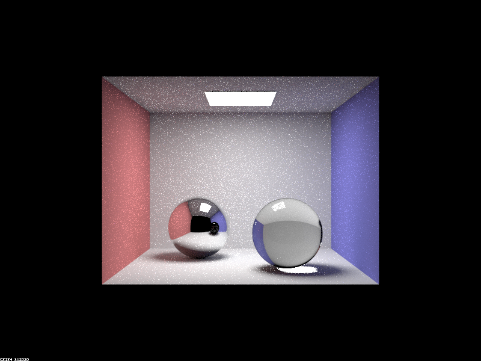
At ray depth three, the reflecting sphere is now showing a reflected image of the room with an effective ray depth of two, so there is a bit of global illumination, but not much. Furthermore, the reflected glass sphere is not completely black anymore, because we can now see the reflections of the room's lighting on it. The glass sphere's color on the other hand is now almost completely made up of refracted light. Now that the ray depth is three, the rays can completely pass through the sphere and capture the direct lighting of the walls. Since we are looking at a "head on" angle, the glass is mostly acting as a refractive material, so the contributions of the refracted light completely washes away the reflected light. The reflections are still there, but now we effectively can't see them because they are too faint. One final effect we see now is a bright spot under the glass sphere. This is because the light coming from the light source had time to pass through the glass and shine on that spot on the ground. |
|
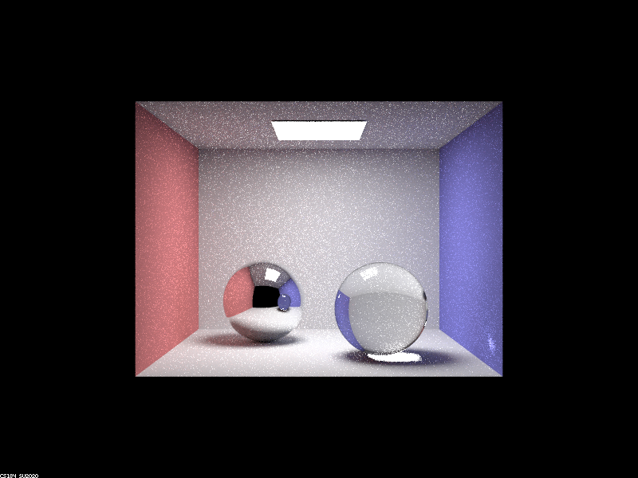
At ray depth four, the reflected scene in the reflecting sphere is brighter, due to more contributions from global illumination. Furtheremore, the reflected glass sphere is now actually blue from the refracted light. The glass sphere is mostly the same, except for that the image is noiser there than before. This is because now global illumination is being taken into effect, and it causes the sampled image to have higher variance. Another cool effect here is that there is now a bright spot on the blue wall on the right. This is from the light that got reflected off the reflective sphere, then got refracted through the glass sphere, and is now hitting the wall. |
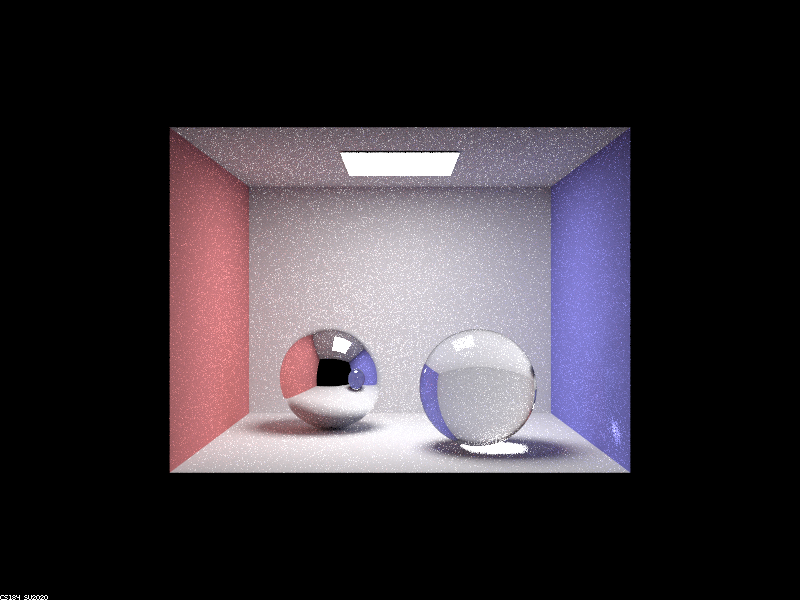
The scene is now a bit brighter again due to more contributions from global illumination, but other than that, it looks about the same. No new multibounce effects. |
|
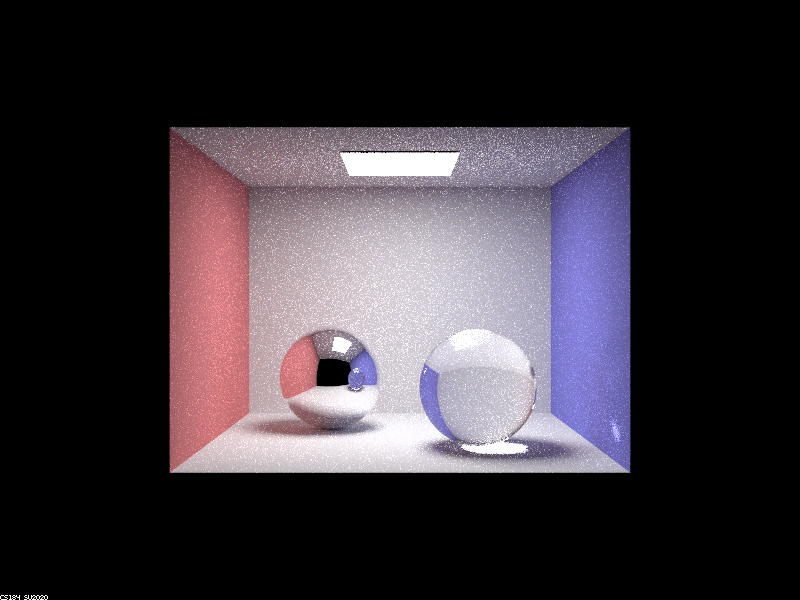
The scene is now again a little bit brighter, and also noticeably more noisy. This is because the ray depth was dramatically increased (therefore increasing the variance of the underlying sampling function of the scene) without increasing the sample count to offset it. |
Part 2. Microfacet Material
Show a screenshot sequence of 4 images of scene `CBdragon_microfacet_au.dae` rendered with $\alpha$ set to 0.005, 0.05, 0.25 and 0.5. The other settings should be at least 128 samples per pixel and 1 samples per light. The number of bounces should be at least 5. Describe the differences between different images. Note that, to change the $\alpha$, just open the .dae file and search for `microfacet`.

|
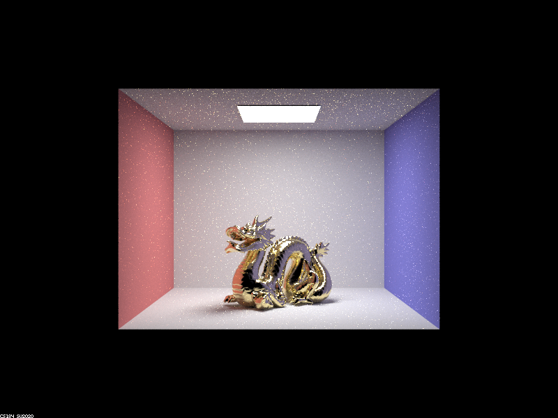
|
|
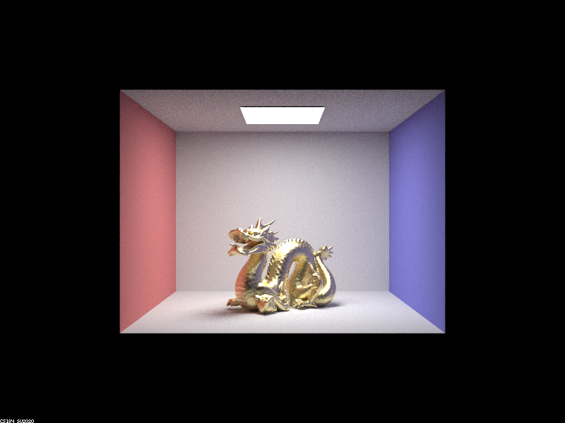
|
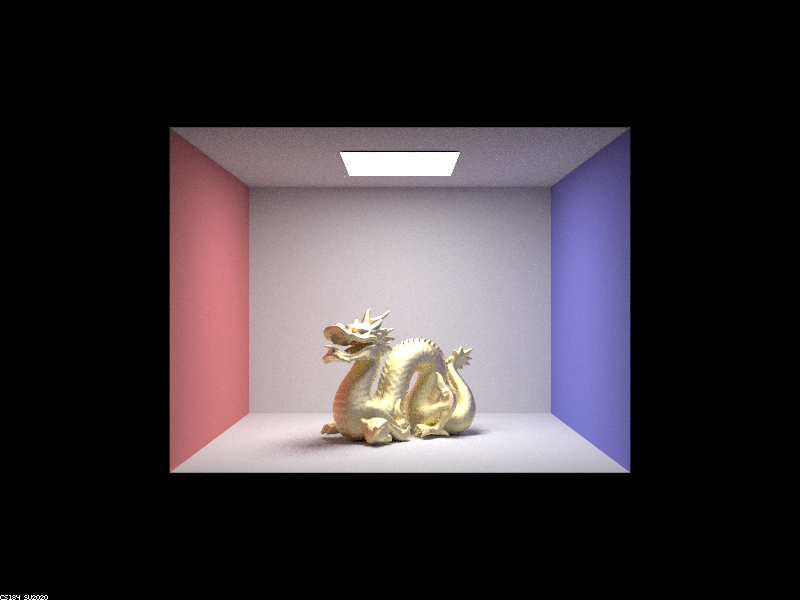
|
Show two images of scene `CBbunny_microfacet_cu.dae` rendered using cosine hemisphere sampling (default) and your importance sampling. The sampling rate should be fixed at 64 samples per pixel and 1 samples per light. The number of bounces should be at least 5. Briefly discuss their difference.
|
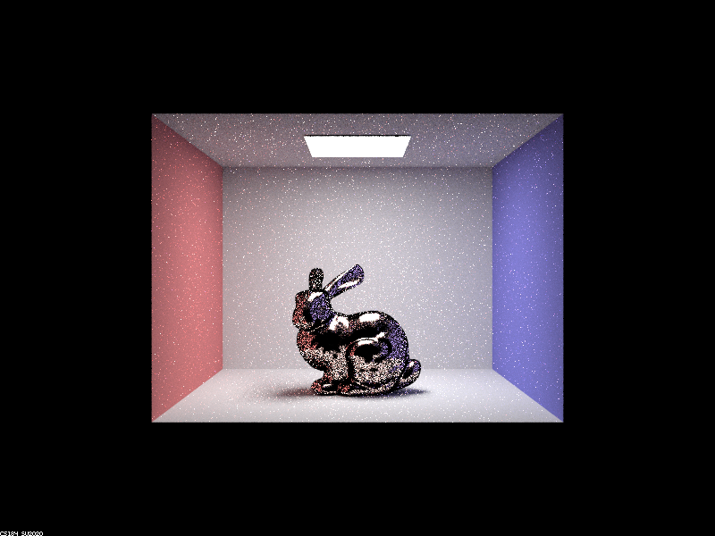
|
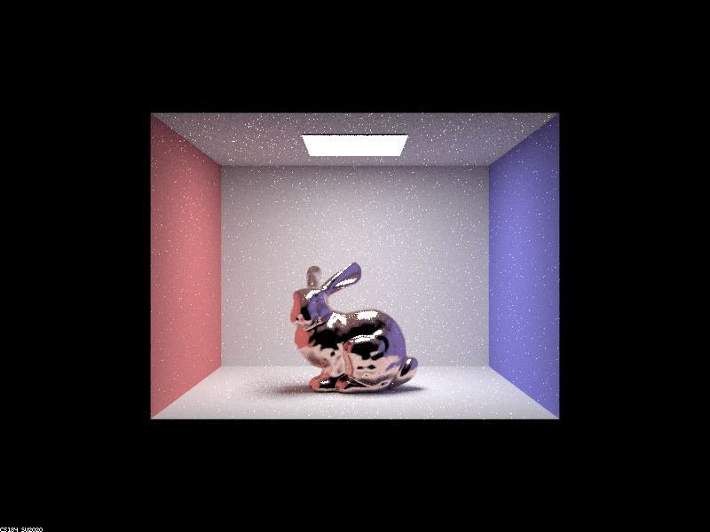
|
Show at least one image with some other conductor material, replacing `eta` and `k`. Note that you should look up values for real data rather than modifying them arbitrarily. Tell us what kind of material your parameters correspond to.
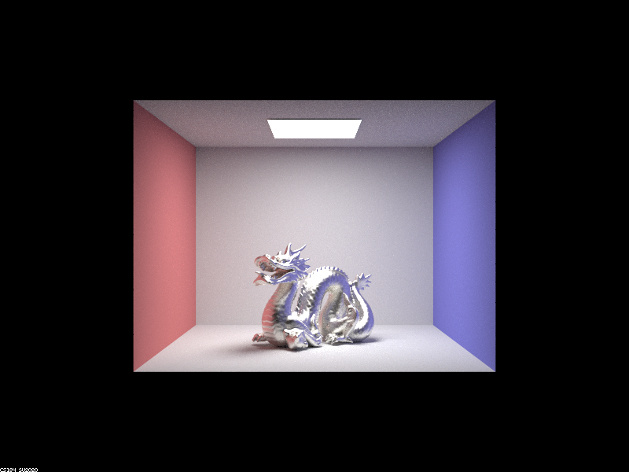